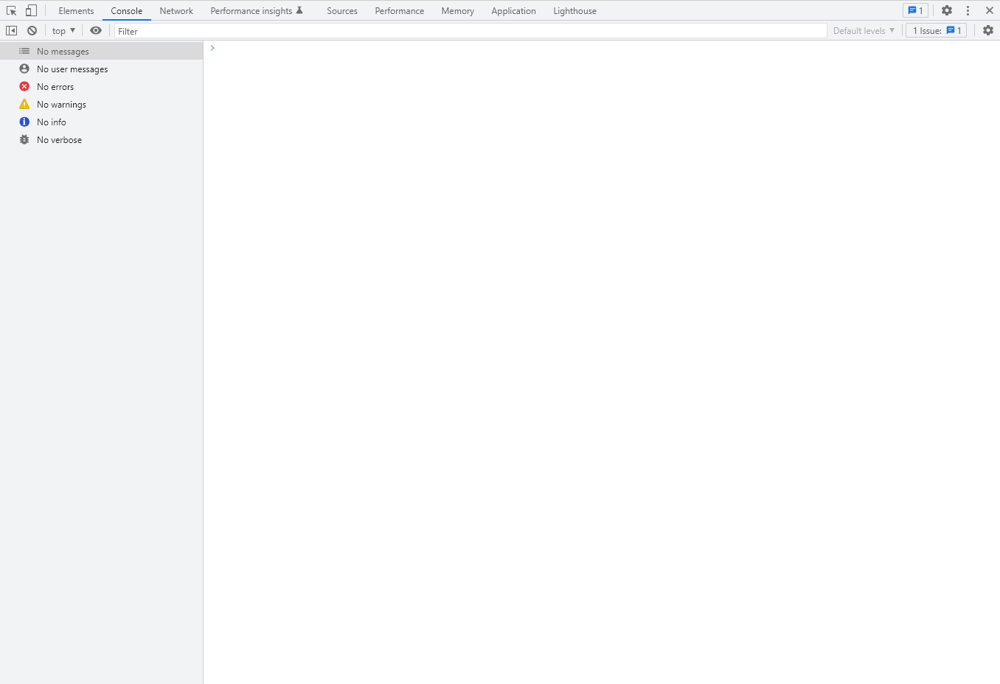
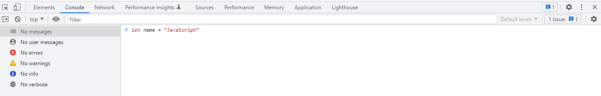
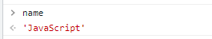

2022年随着疫情的发展经济每况愈下各行各业受到严重打击，计算机行业已经成为了受影响较小的行业之一。学习一门编程语言是入门计算机行业的必备，JavaScript做为前端技术的基础是很值得学习的。
在基础环节我们只会学习最基础的概念，并不会考虑很多特殊情况，您只需要学习到最简单的JavaScript知识就可以了。
很多人在学习编程时会被繁琐的运行环境配置劝退，JavaScript的运行环境格外简单，只要是有浏览器在任何设备上都可以运行。
打开浏览器这里推荐使用chrome或fireFox，按下F12键你可以看到弹出了一个窗口

这个窗口就是浏览器自带的调试器，在这里您可以进行代码的调试。使用方法很简单，在这里只介绍console（控制台）菜单其他菜单后续教程中接受。
点击console您就可以在控制台中输入JavaScript代码并且按下回车键执行它。
在控制台中输入 let name = "JavaScript" 按下回车
如图：

这样您就通过关键字 let 创建了一个名为 name 的变量，变量中储存的值为 "JavaScript" 注意 引号代表它是一个 字符串 类型的变量。
在JavaScript中有很多关键字，代表着一些特殊的意义比如刚才用到的 let 当我们创建变量时一定要注意避开他们否则将出现错误。
要使用变量非常简单，只要输入变量名就可以使用它了。
在控制台中输入 name

控制台就使用了这个变量并将变量的值打印了出来
我们现在创建的名为 name 的变量是一个 字符串 类型的变量，顾名思义它是一串字。
在JavaScript中数据类型是自动判断的根据你输入的值将会自动判断数据类型。JavaScript中主要有8种数据类型分别为：string（字符串）、number（数字）、boolean（布尔值）、null（空）、undefined（未定义）、array（数组）、object（对象）、function（函数）。
其中数组，对象，函数会在后边的教程中详细介绍，我们现来了解最常用的三种类型 string、number、boolean。
string
string字符串类型，定义一个字符串变量使用双引号（"）或单引号（'）将内容包裹起来就构成了一个字符串比如 let name = "JavaScript"或 let name = 'JavaScript'
number
定义数字类型非常简单你只需要输入数字就可以了，比如let ten = 10这样你就定义了一个变量名为 ten 值为 10 的数字变量。
boolean
boolean 布尔类型只有两个值 true 和 false，其中 true 代表真 false 代表假 ，boolean类型主要在判断中出现。
定义布尔类型变量 let isTrue = true 或 let isFalse = false
null
null代表什么都没有 其变量值即为 null
undefined
undefined代表什么都没有 其变量值即为 undefined
array
数组我们会在后面介绍其详细内容
ojbect
对象我们会在后面介绍其详细内容
function
函数我们会在后面介绍其详细内容
在代码中逻辑是最烧脑的一部分也是代码中最关键的一部分，如果想要实现某一些功能那么逻辑是绝对少不了的。
在第一节里面我们学习了变量的创建，当变量创建完成后这些变量便会被后面的代码所使用（如果一个变量创建后不会被使用，那么创建它便是多余的），而使用这些代码的方式便被称为代码逻辑。
运算是通过一些方式获取到我们想要的值，比如将两个数字类型的变量相乘就是一种运算。
let one = 1
let two = 2
let three = one + two
猜猜 three 变量的值为多少
算术运算符
算术运算符的作用主要用于数字的计算
加号运算符
+ 运算符代表将两个数字类型变量相加，将两个字符串类型变量拼接。如果是一个字符串类型和另一个其他类型相 + 效果也会为拼接。
$variable = x + y$
如：
let str1 = "Java"
let str2 = "Script"
let num1 = 1
let num2 = 2
num1 + num2 的值为 3
str1 + str2 的值为 "JavaScript"
str1 + num1 的值为 "Java1" 注意 在这里数字类型的 1 被隐式转换为字符串类型并且拼接到了一起，在使用 + 号时要格外注意这个问题。
++ 两个加号代表在数字本身基础上加1
let num = 1
++num
//num 值为 2
+= 代表在自身基础上加上某一个值，等价于 x = x + y
let num = 1
num += 3+1
num 最终等于 5
减法运算符
- 运算符代表将两个数字相减，如果不是数字类型的话讲返回 NaN （not a number）
$variable = x - y$
let num = 2 - 1 num的值为1
-- 两个减号代表在数字本身基础上减1
let num = 1
--num
//num 值为 0
-= 代表在自身基础上减某一个值，等价于x = x - y
let num = 4
num -= 2-1
num 最终等于 3
乘法运算符
* 运算符代表将两个数字相乘，如果不是数字类型的话讲返回 NaN （not a number）
$variable = x * y$
let num = 5 * 4 num的值为20
** 两个*代表阶乘
let num = 4**2 num的值为 $4^2$ = 16
*=代表在自身基础上乘某一个值，等价于 x = x*y
let num = 4
num *= 5
num 最终等于 20
除法运算符
/ 运算符代表将两个数字相除，如果不是数字类型的话讲返回 NaN （not a number）
$variable = x / y$
let num = 4 / 2
//num 值为 2
/=代表在自身基础上除某一个值，等价于 x = x/y
let num = 4
num /= 2
num 最终等于 2
模除运算符
% 运算符代表将两个数字模除（只保留余数），如果不是数字类型的话讲返回 NaN （not a number）
let num = 5 % 2
//num 值为 1
%=代表在自身基础上模除某一个值，等价于 x = x%y
let num = 5
num %= 2
num 最终等于 1
if在英语中的意思是如果，它的使用离不开我们上一节讲到的boolean布尔类型